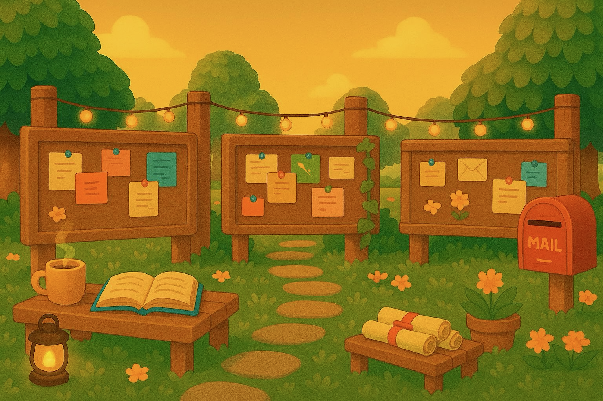

What People Say
in their words
RM
Robert Mooney · Principal Security Architect
"He's a natural. He takes a large amount of disparate and easily confused data and packages it into an easily understood, easily communicated snapshot of progress. He knows how to ask the right questions and does not relent until he has a clear understanding — but he's not a nuisance to the busy engineer. He has a genuine concern for others."
CW
Chris Winter · Manager
"He brought a level of humanity to our team that we sometimes forget. When he leaves, we'll go back to being robots."
SP
Sneha Phadke · Director, Application Security · eBay
"He is an extremely dynamic and versatile program and project manager. Besides being an eloquent speaker and writer, he brings teams together and makes projects successful. If there is a difficult moment in a project, he faces it and resolves it with a unique charm that makes it fun to work with him."
FL
Faron Lyons · Enterprise Account Manager
"Nabil does much more than translate geek speak; he is able to lead. My experience with him has left me confident that any project under his responsibility will end successfully."
KA
Kim Anderson · Colleague & Friend
"You mentor others — especially women, people of color, shy folks, young people. You pass on knowledge horizontally and vertically. You like shy cats, and you cannot lie."
FH
Frankie Pauncevolt Hill
"A broad-ranging, incisive and inspired mind; relentless passion; bright, glowing kindness; independence of judgment — you don't form your ideas to suit an existing framework, but think the values through until you know what you support deeply."
I
Ipsita · MS Cohort, Saint Mary's College
"I really appreciate the way you explain, the way you solve a problem, the way you help us and the way you talk. I've learned a lot of things from you."